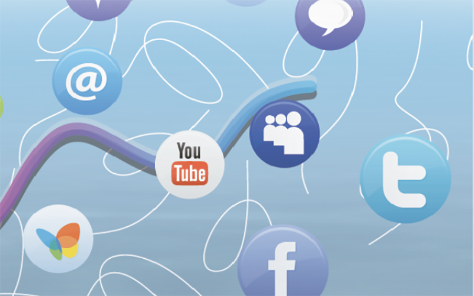
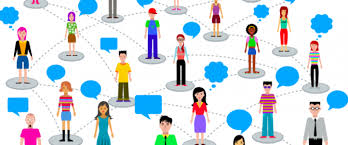

El impacto que han tenido las redes sociales en los jovenes
Las motivaciones por las que los jóvenes utilizan una red social pueden sintetizarse en la siguiente fórmula: entablar contactos + interactuar con amigos + generar nuevos vínculos + crear comunidad. “Si no estás, no existís”, coinciden en su particular lenguaje los adolescentes. En la actualidad ser usuario de una red adquiere un valor de identidad y un sentido de pertenencia. Y, a la luz de lo que muestran las cifras, los jóvenes parecen tener razón.
UNA HERRAMIENTA DE COMUNICACIÓN

¿Qué es una red social? Es una estructura compuesta por grupos de personas que están conectadas entre sí por uno o varios tipos de relaciones, como la amistad, el parentesco, intereses o conocimientos comunes. La definición preexiste al nacimiento de las redes informáticas y aún de Internet aunque, el concepto se ha popularizado por el uso cada vez más generalizado del dispositivo en la red de redes. “Los vínculos que tienen los jóvenes en la vida real encontraron una herramienta en la web que les permite estar conectados al instante. La red social es un nuevo lugar donde encontrarse pero no es un generador mágico de amistades”, sostiene la Licenciada Mariela Arinas, psicóloga de adolescentes. “Los vínculos genuinos necesitan de un tiempo y un trabajo de construcción, no nacen instantáneamente”, asegura esta especialista para quien es vital la mirada atenta de los padres para que el uso de Facebook sea positivo.
LA SEDUCCIÓN DE LA FAMA

La popularidad es hoy un valor altamente positivo para los jóvenes, indicó una encuesta del Ministerio de Educación realizada entre 3500 alumnos secundarios. Por eso es fácil entender la actitud tan generalizada de exhibir la cantidad de amigos que tienen en la red. Ese gesto expone con claridad que el anonimato y la intimidad ceden ante el deseo de la fama. Algo que, por cierto, no es exclusivo de los menores y se hace visible en la cultura televisiva que domina en la actualidad. A contramano de la idea, bastante generalizada, acerca de que la gran permanencia frente a la computadora los convierte en una generación aislada, la consultora de la Unesco en temas educativos, Dra. Morduchowicz, opina que “la presencia de las pantallas en su vida no implica un aislamiento o anular su vida social, al contrario”. Por supuesto, “estar quince horas chateando no es beneficioso”, como tampoco lo es estar esa cantidad de tiempo mirando televisión o leyendo un libro. Los adultos tienen que promover que las actividades sean diversas y pongan en juego distintos aspectos de los chicos”. Se refiere a la posibilidad de que los adolescentes desplieguen sus potencialidades intelectuales, físicas y expresivas.
¿LOS CHICOS SABEN MÁS?
Estas redes sociales se basan en la teoría de los seis grados, Seis grados de separación es la teoría de que cualquiera en la Tierra puede estar conectado a cualquier otra persona en el planeta a través de una cadena de conocidos que no tiene más de seis intermediarios. La teoría fue inicialmente propuesta en 1929 por el escritor húngaro Frigyes Karinthy en una corta historia llamada Chains.
El concepto está basado en la idea que el número de conocidos crece exponencialmente con el número de enlaces en la cadena, y sólo un pequeño número de enlaces son necesarios para que el conjunto de conocidos se convierta en la población humana entera.
El término red social es acuñado principalmente a los antropólogos ingleses John Barnes y Elizabeth Bott, ya que, para ellos resultaba imprescindible considerar lazos externos a los familiares, residenciales o de pertenencia a algún grupo social.
Los fines que han motivado la creación de las llamadas redes sociales son varios, principalmente, es el diseñar un lugar de interacción virtual, en el que millones de personas alrededor del mundo se concentran con diversos intereses en común.
.png)